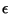

Implementing Deep Shadow Maps
Benjamin F. Gregorski
ECS 289 Image Based Rendering
Winter Quarter 2001
Professor Nelson Max
Abstract:
The purpose of this document is to describe my implementation of the Deep Shadowm Maps
algorithm for Image Based Rendering.
The Deep Shadow Maps algorithm presented in [2] is an efficient algorithm
for rendering soft shadows
in sythetic environments. Some of the diagrams presented in their paper are reused here.
The algorithm extends traditional shadow maps to
work with transparent and volume objects
in a memory and computation efficient manner. The algorithm is similar
to Image Based Rendering Techniques such as Layered Depth Images
presented in [1]. The Deep Shadow Map stores the
visibility along a ray emanating from a light source. This visibility
information measures the amount of light that penetrates to a given depth away from the light source.
This information can then be used
to determine how much illumination is received by a point in the scene.
Given a camera C at a Lightsource L, a Deep Shadow Map (DSM) is the array
of pixels on the image plane of C. Each pixel stores a visibility function
that determine how much illumination passes to a given depth along
the ray from the camera position through the pixel center.
Figures 1 show visibility functions for different objects within a scene.
The visibility function at each pixel is capable of capturing transparent, volumetric, and partial
blocking effects.
Figure 1:
Visibility Functions
-
-
|
The visibility values for a particular ray through the camera's image plane
are obtained by sampling the scene along the ray and compositing the opacity values
to determine how much light is transmitted to a particular depth.
In my implementation,n rays are followed through the scene for each pixel to form
bf n transmittance functions for the pixel.
These functions are then combined to form the visibility function for the pixel.
Surfaces are sampled by finding the intersection of the ray with the surface and computing the
opacity at the intersection point. The actual depth at which the transmittance
value is recorded is fudged a little away from the image plane so that the point
on the surface does not cause the light to be attenutated. This results in two points in the transmittance
function; one point is directly in front of the surface with the previous transmittance value
and one point is directly behind the surface with the new transmittance value.
Their depth values are separated by a fudge factor. This gives all surfaces some minimal thickness .
The amount of light transmitted through a surface is
.
The ray is traced until the transmittance is close to zero or until no more objects exist along its path.
Volumes are sampled by sampling the volume desity function at regular intervals along the ray.
The density values form what the authors term an extinction function that dictates how much the light
is attenuated as it passes through the volume. The transmittance value
for depth through the volume is given by the top formula in Figure 2.
This extinction function is integrated
to get the transmittance function for the ray through the volume. This is performed using
the bottom formula in Figure 2. In my implementation, I sample the density function
along the ray for the whole extent of the volume
ignoring the accumulated transmittance value. The density values correspond to the extinction
values used by the authors. The necessary value are kept when the
volume and surface transmittance functions are merged together.
Figure 2:
Volume Integration Equations
|
Figure 3:
Surface and Volume Composition
|
|
The volume and surface transmittance functions are combined to form the visibility function for
the pixel. This is done by simply multiplying the two functions together at each of the sample points.
Lastly, this function can be compressed to save storage space since a full resolution DSM can use
a lot of memory. The function composition process and extinction function integration process
are shown in Figure 3.
The DSM is used during rendering to determine what percentage of light from a lightsource
reaches a particular point. This allows for the fast generation of soft shadows. In my implementation,
I integrated DSMs into my raytracing program and used the DSMs at run time in place of tracing shadow rays.
The DSM are used for shadowing complex objects such as volumes or objects with complicated geometry
where tracing shadow rays can be very expensive. In other less complicated areas of a scene,
regular shadowing techniques can be used since they do not have a performance penalty
that warrants the extra memory used by the DSM.
The run time lookup process works as follows:
- A point P is projected back on the image plane of
the lightsource's camera.
- The pixel onto which P projects ( )
is determined as well as the point's depth
from the camera. In perspective, this is not the distance from or the camera point,
but the perpendicular distance from the camera's image plane.
- The visibility for P is determined by averaging the visibility function for
along with some surrounding pixels at the point's depth. This determine the final
visibility for P. Currently I simply use the average visibility of all of the visibility
values in the filter range. Different filters can be used to achieve different shadowing effects
or smoother shadows.
- If P does not project to a valid pixel on the image plane then the DSM cannot be
used for visibility checking. In this case, I simply trace a standard shadow ray from
the intersection point to the lightsource.
A single visibility element contains a depth and a visibility value.
The visibility is always with . The depth is always greater than 0.
A single DSM pixel is represented by a dsm_pixel object. This object contains
an array of visibility elements.
The DSM is stored as an array of dsm_pixel objects. Along with a camera that describes
the viewing volume covered by the DSM. The structure definitions are given below.
struct visibility_element {
float _depth, _visibility ;
} ;
struct dsm_pixel {
unsigned int _size ;
visibility_element * _vel ;
} ;
The following steps detail the computation of the transmittance function for
a single ray through the scene.
This process is repeated n times for each pixel on the image plane.
All n rays for a pixel are combined to form the final visibility function
for the pixel. The points (i.e. depth visibility pairs) are taversed in front to back order
a point is included only if it differs from the next point by a depth or visibility
threshold.
- The surface transmittance function is built by tracing the ray through all of the
non-volumetric objects.
- The volume extinction function is built by tracing the ray through all of the volumetric objects
and sampling the density function along the ray.
- These density samples are integrated to form the volume transmittance function.
- The surface and volume density functions are combined to form the final transmittance function
for the ray.
Two Spheres above a plane with a single light source.
There is one light source with
a DSM of 450x450 pixels. 16 rays were traced per pixel to form the DSM,
and a 11x11 grid of pixels was used to determine visibility at run time.
These pictures show how the Deep Shadow Map
is able to capture the attentuation and partial
illumination through semi-transparent surfaces.
Since some light travels through the semi-transparent sphere,
the shadows cast by this sphere are not as dark as the other sphere.
A pyramid of spheres sitting on a plane.The scene has a total three light sources. One light source
has a DSM of 400x400 pixels. 16 rays were traced per pixel to form the DSM,
and a 9x9 grid of pixels was used to determine visibility at run time.
In the picture on the right extra rays have been traced for anti-aliasing.
These pictures show how the Deep Shadow Map algorith does a good job of filtering
the visibility values for the shadows. Comparing the shadow quality of the regular and anti-aliased
images shows that the shadow quality is comparable.
The same pyramid from above looking from the camera with the Deep Shadow Map.
The pyramid from above but soomed in. Again the picture on the right has extra rays traced
for anti-aliasing.
DSM can also be used to shadow volumetric objects where tracing shadow rays is very expensive.
The volumes were created using some of David Ebert's code from
his Texturing and Modelling book.
The volumes contain 64x64x64 data elements. There is one light source with a 300x300 DSM,
4 rays were traced per pixel, and a 9x9 grid of pixels was used to determine visibility at run time.
A different volume rendered using 3 light source one of which has a DSM.
The DSM has 350x350 pixels, 8 rays were trace perpixel to generate the DSM, and a 11x11 grid of pixels
was used at run time.
-
- 1
-
L.-w. H. Jonathan Shade, Steven Gortler and R. Szeliski.
Layered depth images.
In Siggraph 1998 Proceedings. ACM Siggraph, 1998.
- 2
-
T. Lokovic and E. Veach.
Deep shadow maps.
In Siggraph 2001 Proceedings. ACM Siggraph, 2001.
{kind=link}
{kind=link}
{kind=link}
{kind=link}
{kind=link}
{kind=link}
{kind=link}
{kind=link}
{kind=link}
{kind=link}
{kind=link}
{kind=link}